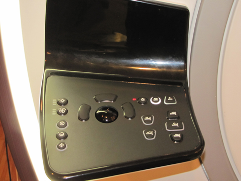

Operating Documentation
Direction 5670006, Rev# 1
Discovery MR750w GEM Service Methods
Module Version 5.0, Version Date 10/12/11
Operating Documentation |
Diagnostics >> System Function >> Patient Handling >> SRI Functional Tests
Diagnostics >> Hardware Location >> Magnet Room >> SRI Functional Tests
Illustration 1: SRI Functional Diagnostics

This test provides a quick method of testing the control panel display.
Operator panel lights
None
Select [Magnet Enclosure Display Test].
Click [Run].
The operator panel lights should blink on for one second, then off for one second, repeating until the test is stopped.
Illustration 2: In-Room Display Operator Panel

When test is complete, click [Stop] to end the test.
There are two failure modes for the Display Test:
If one control panel fails, it is likely there is a problem with the control panel.
If both control panels fail, it is likely there is a problem with the cabling from the SRI or with the SRI itself.